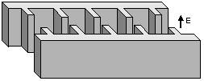
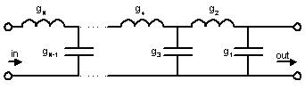
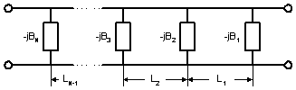
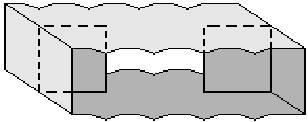
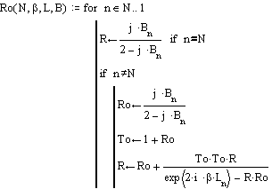

|
 |
No software
required to design an iris filter. The design procedure is old, simple and
reliable. It is described in many engineering handbooks (see, for example,
Collin “Foundation for Microwave Engineering”). I have built couple of filters using the classic approach. They
work fine. The procedure how to design such a filter is briefly described
below. |
Common Design Procedure
|
1. |
 Low-pass filter prototype ladder network |
Initially the low-pass prototype network elements values have to be found. Those values can be calculated using simple formulas from the Collin’s book . They are normalized to roll-off frequency point (w) equal to unity and depends on the filter order and response type (Chebychev or maximally flat). |
|
2. |
 Waveguide iris filter distributed prototype |
The next step is to calculate susceptances of the equivalent waveguide distributed network where the susceptances are connected to each other using waveguide sections. Therefore make sure the waveguide dispersion is taken into account. The B-values are depended on the filter bandwidth. The length of each cavity is calculated from B-values. See Collin’s book for details. |
|
3. |
 |
After the B-values are found, the width of appropriate waveguide H-plane irises can be calculated. Formulas for inductive iris susceptance is presented in Marcuvitz “Waveguide Handbook” or Lewin “Theory of Waveguides”. The last ones are simpler but not less accurate. Using charts from handbooks are not recommended, because visual reading errors can significantly worsen the pass-band filter performance. See Tolerance Influence. |
|
4. |
 |
Performance verification needs a programming tool. MathCAD is the simplest to simulate the filter response. Calculating the frequency response of the filter is based on cascading s-parameters of each iris N times. In terms of MathCAD that procedure looks like a loop function shown on the figure. The B-values presented there differ over frequency, so their values must be computed for any particular frequency point. The loop can be easy realized in FORTRAN, provided by an interface, compiled and used as stand-alone module forever. Real surface loss may be inserted using complex b where the imaginary component is the waveguide attenuation number multiplied by about 1.5 (experimentally found correction). |
|
5. |
NotesThere are sum assumptions the procedure is based on. The obtained g-values are approximate, iris coupling is assumed to be constant over frequency, waveguide is not an ideal transmission line and iris thickness is assumed to be 0. The effect is that the built filter will be shift right on frequency axis and its bandwidth is narrower than expected. But this is OK, if tuning screws are considered, because the tuning margin of an iris filter is quite wide. Using more accurate software does not help to avoid tuning screws, because common production facilities do not provide adequate accuracy of machining operations. |
|
Design Software
|
The procedure can be easy realized in FORTRAN or other languages supporting functions of complex variables. Here you can download a simple software kit to design an iris filter from spec to hardware dimensions. The package consists of three programs ‘filter50’, ‘filter51’, ‘filter52’ and ‘filter53’. The software output files with dimensions, frequency response, s-parameters, i.e. all information needed to build hardware or combine it with another commercial. It is free. Nevertheless, I have to notice that I have created this package for my personal use, compiled using non-professional tools, so it cannot be formally used to gain money by anybody including me. However, if there is an interest in buying newer and more accurate version or another filter design tools see Software List and contact me. |
Ó R. Goulouev, 27.02.00